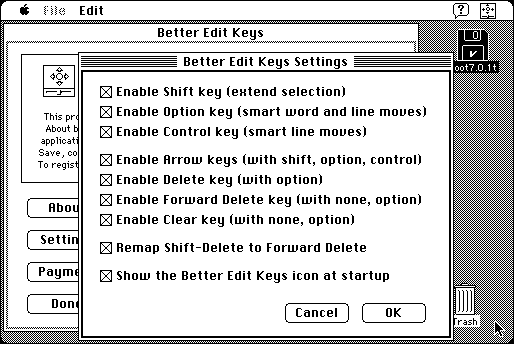

Download
better-edit-keys-11.zip (90K) Better Edit Keys 1.1 repackaged into a zipped hfs disk image and checksum file. The disk image can be mounted with Mini vMac.
better-edit-keys-11.hqx (119K) Better Edit Keys 1.1 in the original format.
copyright: Alessandro Levi Montalcini
mod date: Apr 30, 1997
license: Freeware
last known url
(gone)
Allows “you to use the shift, option and control keys with the arrows, delete, forward delete and clear keys in any standard text editing field, including basic text editors such as SimpleText.” Seems to require System 7 - it works in System 6.0.8, but bringing up its Control Panel crashes.

If you find these downloads useful, please consider helping the Gryphel Project, which hosts them.
Here are the md5 checksums for the downloads, signed with Gryphel Key 5:
--------- GRY SIGNED TEXT --------- d90d18c0177babbc7ec75d976b97991e better-edit-keys-11.zip 89e3b07e786552dd7ec180f31fb2e598 better-edit-keys-11.hqx ------- BEGIN GRY SIGNATURE ------- Gry/4Xa8CFcUzxdN/N9CzYZtjQLaNXkHjf/fGQeMtjvAPSFTPx5Y7MBW2M9lsnJK jcVkklBeRYDnYVZ2L+hCwwFn9Hddj5UrpwuelytbUkxPn0hi5RsQ/DxTvMma/93L 8VCIZSHuM1ksk/PrrAzg9sjCOKQjrfp1rUZ9pg1uOcLI6mtp8IWW48DiVMKY/JVv -------- END GRY SIGNATURE --------